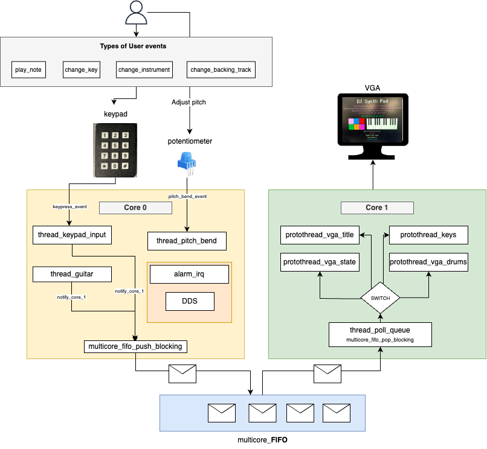
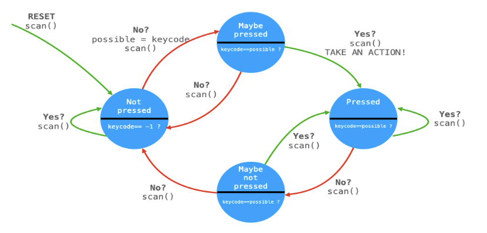
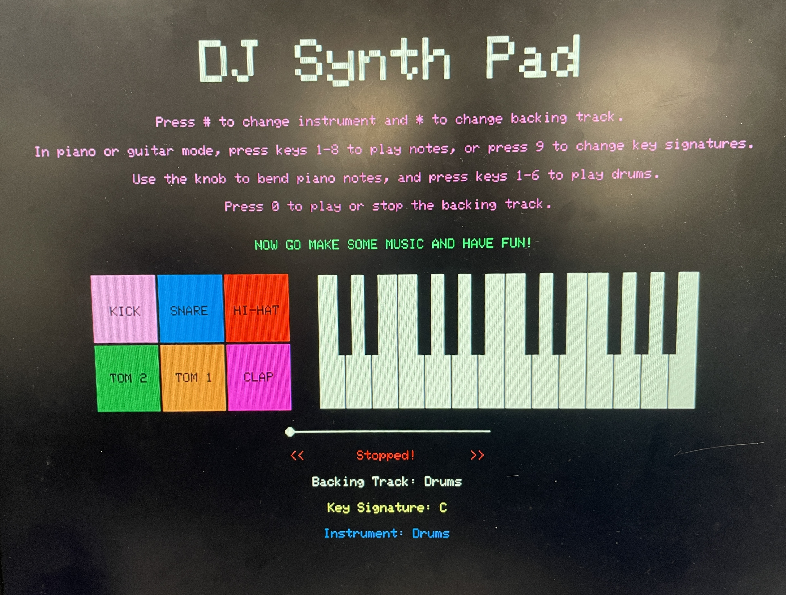
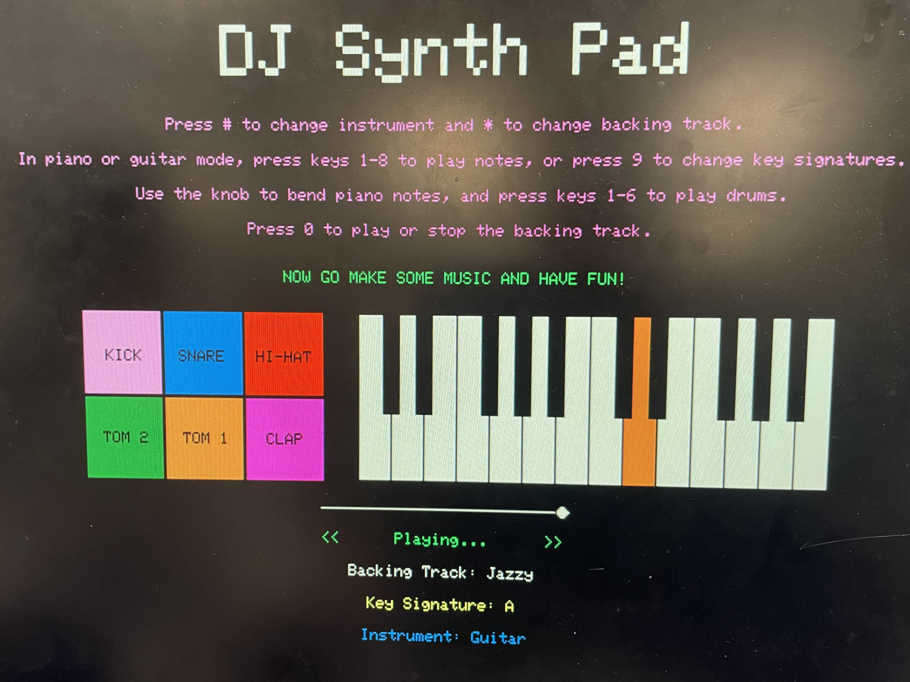

ECE 5730 Final Project: DJ Synth Pad
Nicholas Papapanou (ngp37) | Sivaraman Sankar (ss4362)

Nicholas Papapanou (ngp37) | Sivaraman Sankar (ss4362)
DJ Synth Pad is an audio playground on a breadboard, letting users create, mix, and visualize music in real time.
This project implements a DJ-style synthesizer using the RP2040 microcontroller, enabling users to
layer piano, guitar, and drum sounds over selectable backing tracks in real time. The system features a 3x4
keypad for triggering notes and samples, a potentiometer for pitch bending, and a live VGA interface for
visual feedback. Audio is generated via direct digital synthesis for piano, Karplus-Strong string synthesis
for guitar, and DMA playback of .wav samples for drums and backing tracks. The goal was to
create an expressive, low-latency musical interface that leverages the full range of embedded tools
explored in ECE 5730, from audio synthesis and real-time multithreading to DMA, SPI, and dual-core
execution.
Watch our final project demo below!
The inspiration behind DJ Synth Pad stemmed from our shared passion for music and a desire to build an expressive, interactive musical interface from scratch. We both greatly enjoy playing instruments and listening to music, and we wanted to bring that creativity into the world of embedded systems. Inspired by commercial tools like MIDI controllers, drum machines, and DJ mixers, our goal was to create a performance platform that feels responsive and engaging while operating entirely on low-cost microcontroller hardware.
We also saw this project as a natural extension of the core themes in ECE 5730: real-time synthesis, multithreading, peripheral control, and user interface design. We aimed to build a system that not only sounds great, but feels great to use. The project challenged us to merge artistic goals with embedded engineering to create a musical experience that's both technically and creatively satisfying.
At the core of our audio system is fixed-point arithmetic, which allows us to perform fast, fractional math using integer-only operations on the RP2040. We use 16.15 fixed-point formats for representing real-valued quantities with high precision and low overhead. This lets us compute multiplications, divisions, and filtering operations efficiently within timing constraints, particularly inside interrupt service routines (ISRs).
For piano synthesis, we use Direct Digital Synthesis (DDS), which generates tones by
iteratively incrementing a 32-bit phase accumulator and indexing into a 256-point sine lookup table. The
increment for a desired frequency Fs is computed as:
phase_incr = (Fout × 232) / Fs
where Fs is the DAC sampling rate. The high bits of the accumulator index into
the
table, and the output is scaled using a fixed-point amplitude envelope with programmable attack and
decay
profiles. DDS provides stable, real-time tone generation with smooth pitch bending, which we control via
a
potentiometer.
For guitar synthesis, we implemented a Karplus-Strong algorithm with added low-pass and
all-pass filtering. Each note is represented by a circular buffer whose length determines the pitch
(e.g., a
buffer length of 76 at 20kHz approximates a C4 note). The buffer is initialized with a pluck waveform
and
the output is computed as:
y[n] = η × (lowpass(x[n]) - y[n-1]) + x[n-1],
where η is a fractional delay tuning parameter, and the system is implemented using
fixed-point
multipliers for all arithmetic. The filtered feedback simulates natural decay and harmonics of a
vibrating
string. Parameters like damping, buffer size, and waveform type can be tuned per note.
Implementation details for both methods are discussed further in the Software Design section. These techniques are adapted from the ECE 5730 course material, with full references provided in Appendix D.
DJ Synth Pad operates as a tightly integrated embedded music system driven
by the RP2040’s dual-core architecture, implemented primarily in dj.c. The system is split into
two major domains:
Core 0 runs three main subroutines: one for keypad input handling and system state changes, one for
potentiometer-based pitch bending, and one for guitar synthesis. The keypad is decoded to trigger piano
notes, drum samples, scale and instrument switching, and backing track control. Piano notes are generated
via DDS inside a high-frequency timer ISR, while guitar tones invoke a Karplus-Strong algorithm that uses a
circular buffer and custom filtering in karplus_strong.c. Drum and backing tracks are streamed
via dual-channel DMA using SPI, with separate channels (A and B) for each of the two speakers.
Core 1 is dedicated to VGA rendering, utilizing five protothreads for visual updates: title and
instructions, piano key visualization, drum pad visualization, playback state (seek bar, labels), and a
queue polling thread that receives updates from Core 0. Communication between cores is handled using the
multicore_fifo system, where structured messages encode note changes, instrument mode, and
drum
presses. These messages are parsed on Core 1 and rendered as stateful UI feedback.
Audio output is handled by an MCP4822 SPI DAC, with Channel A used for backing tracks and Channel B for piano, guitar, or drum output. The DAC is clocked at 20 MHz and synchronized with DMA or ISR writes depending on the audio path. The potentiometer, connected to ADC0, continuously updates a fixed-point pitch multiplier that dynamically affects DDS frequency. The entire system is coordinated at high performance through interrupt timers, multithreaded state machines, DMA chaining, and SPI streaming, allowing for seamless musical interaction across all channels.
The system design favors software implementations for flexibility and expandability. All audio synthesis, input handling, and UI control are implemented in software using protothreads and ISR routines. We leveraged hardware peripherals—namely the SPI controller, ADC, and DMA engine—for precise, efficient data transfer. While some audio routing could have been offloaded to dedicated audio ICs or hardware mixers, implementing everything in software on the RP2040 allowed us to finely control timing, layering, and resource sharing, especially for synchronized drum and backing track playback.
All .wav samples used in this project, both for drum hits and backing tracks, were sourced
from
copyright-free libraries and are cleared for non-commercial use. We based our synthesis techniques on
publicly available course materials and research papers, with citations provided in
Appendix D. No proprietary trademarks or patented protocols were
reverse-engineered or violated in the
course of this project.
All hardware used in DJ Synth Pad was sourced from prior ECE 5730 labs, so no additional components were purchased for this project. The system integrates a Raspberry Pi Pico (RP2040) microcontroller with the following peripherals: a 3x4 matrix keypad for user input, a potentiometer connected to the ADC for pitch bending, an MCP4822 SPI DAC for stereo audio output, and a VGA display driven via PIO and DMA. Connections were made on a standard breadboard with passive components like resistors for VGA signal conditioning and overcurrent protection on the keypad GPIOs. Pin assignments and electrical connections are documented in the schematic and wiring note below. Relevant datasheets and hardware resources are included in Appendix D.

Keypad GPIO Connections
MCP4822 DAC Pinout
VGA Connector Pinout
DJ Synth Pad’s software architecture is built around the protothreads cooperative multitasking model, distributed across the RP2040’s dual cores. Core 0 handles audio synthesis, DMA playback, keypad input, and potentiometer-based pitch bending, while Core 1 manages the VGA display and state-driven UI. All major components are implemented in C using fixed-point arithmetic for fast real-time performance. Audio routines use interrupt service routines (ISRs) or DMA, and UI state is synchronized between cores via multicore FIFO messaging.
The following software components draw heavily from ECE 5730 course examples, particularly for audio synthesis, protothreads, VGA rendering, and SPI/DMA configuration. All referenced course resources are listed in Appendix D.
A key aspect of our system is robust user interaction through a 3x4 matrix keypad, read via GPIO 9–15. The
keypad is polled in a dedicated protothread with a four-state debounce finite state machine (FSM) adapted
from Lab 1. Button events control all user actions: keys 1–8 trigger notes, 9 cycles the key signature, *
changes the backing track, # switches instruments, and 0 toggles playback. When in drum mode, keys 1–6
trigger individual drum samples. Debounced inputs update shared state and, when needed, generate VGA updates
sent over the multicore FIFO. The FSM is implemented in thread_keypad_input in
dj.c, and transitions between RELEASED → MAYBE_PRESSED → PRESSED → MAYBE_RELEASED.
Below is a diagram of the debounce FSM used for keypad input.

In addition to the debounce FSM, we implemented simple FSMs to manage global instrument, key, and playback
state. These are represented by the InstrumentState, KeyState, and
PlaybackState enums respectively. Transitions between states occur in response to keypad
inputs, and the updated state is used by audio threads and passed to the UI via FIFO.
The project uses eight protothreads, three on Core 0 and five on Core 1, scheduled cooperatively using the
provided pt_cornell_rp2040_v1_3.h utilities:
thread_keypad_input – scans and debounces keypad input; updates state, triggers
sound, sends messages to Core 1thread_pitch_bend – continuously reads ADC to scale piano frequencies via
fixed-point multiplierthread_guitar – detects active guitar notes and triggers Karplus-Strong synthesis
thread_poll_queue – listens for state changes from Core 0 over multicore FIFOprotothread_vga_title – displays title screen and instructionsprotothread_vga_state – renders playback state, key signature, instrument, and seek
barprotothread_vga_drums – shows drum pad visualization and highlight when pressed
protothread_keys – displays piano key state and visual feedback when pressed
Communication between cores is implemented using the RP2040’s multicore_fifo hardware queue.
Messages are structured using a custom StateMessage format defined in shared.h,
allowing compact, typed events to be sent from Core 0 to Core 1. Events like note presses, instrument
changes, and drum triggers are pushed into the FIFO on Core 0 and parsed on Core 1 to drive UI updates.
Both drums and backing tracks are streamed as 16-bit PCM .wav samples using dual-channel DMA
(channels A and B) to the MCP4822 DAC over SPI. Each stereo output is mapped to a separate DAC channel,
allowing mixed-layer playback. Samples were trimmed and resampled in Audacity and then converted into
const unsigned short arrays using our custom convertWav.py script. This script
reads a mono .wav file and generates C arrays that can be directly included and streamed from
flash memory, by prepending the necessary DAC configuration bits (0b0011 for channel A,
0b1011 for channel B) to each 12-bit sample. The DMA timers are configured to output at 22.05
kHz, and the fraction 250 MHz × 2 / 22673 was used to match this rate, ensuring audio quality.
Each drum sound and backing track has its own .c file, which is linked into dj.c
as an array and length variable. These are stored in structured arrays (AudioTrack tracks[] and
DrumSample drums[]) and indexed during playback. To perform the actual transfer, we used DMA
chaining: each DMA output uses a control channel and data channel. When the control
channel completes a trigger, it automatically starts the corresponding data channel to send the next audio
word. For example, CTRL_CHAN_A chains into DATA_CHAN_A for backing track playback,
and CTRL_CHAN_B to DATA_CHAN_B for drums. This enables seamless looped playback
with minimal CPU intervention. Playback is triggered in playback() and playDrum()
functions and can be stopped or restarted cleanly via stopPlayback().
We initially explored applying real-time tempo or EQ adjustment to backing tracks and generating drum synthesis on-chip, but these proved too computationally demanding within the constraints of DMA-only playback and real-time SPI output. Using sample playback allowed us to preserve audio quality, minimize CPU load, and layer sounds reliably. These design decisions prioritized responsiveness and stability over complexity.
The piano tones are generated using Direct Digital Synthesis (DDS) inside a timer ISR running at 50kHz,
implemented in the alarm_irq() function in dj.c. A 32-bit phase accumulator
phase_accum_main_0 is incremented by a frequency-dependent value calculated using
major_freqs[][] and the real-time pitch bend multiplier pitch_multiplier_fix15.
The upper 8 bits of the accumulator index into a 256-entry sine lookup table sin_table, which
stores fixed-point values scaled for the 12-bit MCP4822 DAC. The DDS equation effectively becomes:
phase_accum += (frequency × pitch_multiplier × 2^32) / Fs, where all values are fixed-point.
The sine value retrieved from the table is multiplied by an amplitude envelope that modulates the output
based on attack and decay slopes, defined by attack_inc and decay_inc. This
amplitude ramping is handled within the ISR itself to ensure clean fades when keys are pressed or released.
The final 12-bit sample is offset, prepended with the DAC control bits for Channel B, and transmitted via
spi_write16_blocking(). This low-latency pipeline allows seamless synthesis of piano notes.
Pitch bending is controlled in a separate protothread, thread_pitch_bend, which reads the
potentiometer using ADC0 and adjusts the frequency increment multiplier dynamically to allow smooth
half-step bends. The ADC is polled every 30ms, and if the change in reading exceeds a threshold
(BEND_THRESHOLD), the value is converted to a fixed-point multiplier between 0.94 (frequency of
a half step down) and 1.06 (frequency of a half step up) to avoid jitter and ensure smooth response.
Guitar tones use a software implementation of Karplus-Strong synthesis detailed in
karplus_strong.c. The play_guitar_note function initializes a circular buffer with
one of several pluck styles—random noise, low-passed noise, Gaussian, or sawtooth—stored in the
init_string array. Each pluck style simulates a different excitation of the string. The core
loop repeatedly calls compute_sample(), which applies a two-stage filter: a low-pass averaging
filter for energy decay and a fractional-delay all-pass filter controlled by eta[] to fine-tune
pitch. Filtered output is fed back into the string buffer, and read/write pointers ptrin and
ptrout update with wrapping at the buffer length. Output samples are streamed to DAC Channel B
using spi_write16_blocking(), producing expressive, physically-plausible guitar tones with
minimal CPU load. The loop sustains for a fixed number of samples (~20k), and buffers are zeroed at the end
to ensure silence.
The VGA interface was designed for clarity, feedback, and aesthetics. It displays the current instrument,
key signature,
and backing track, along with live visuals of key presses and drum hits. Core 1 runs five dedicated
protothreads that call helper functions from vga16_graphics.c to render text, shapes, and color
changes to the screen. The piano UI includes a 14-key layout with black and white keys that highlight
pressed notes in orange. Notes vary depending on the selected key signature, and the correct
labels are rendered dynamically. The drum pad UI features a 2x3 grid with labeled pads that momentarily turn
white when hit, providing a clear flash for visual emphasis before reverting. A seek bar updates every
frame, advancing a small circle whose speed is scaled to the total frame length of the current track, stored
in track_total_frames[]. This results in smooth scrolling tied to playback duration. While we
initially planned a real-time waveform visualizer, we ultimately focused on interactive elements to maximize
usability within VGA’s resource and timing constraints.
Below is a picture of the VGA UI on startup. The default drum backing track is stopped, and the default instrument is the piano in the key of C.
Below is a picture of the VGA UI while the user is playing guitar in the key of A over the jazzy backing track.
DJ Synth Pad successfully demonstrated real-time audio synthesis, layered playback, and interactive control using low-cost embedded hardware. All system components, including dual-core protothread scheduling, DMA playback, and visual feedback, functioned as intended without hangs or crashes. The final product supported smooth mode switching, pitch bending, and musical improvisation using only a keypad and potentiometer, with engaging visual feedback on VGA.
Below is a video of the C, A, and G piano scales being played via direct digital synthesis:
Below is a video of the C, A, and G guitar scales being played via Karplus-Strong synthesis:
Here are the drum samples played via DMA playback of .wav files
converted to
const unsigned short arrays.
Here are the backing tracks played via DMA playback of .wav files converted to
const unsigned short arrays.
Check out the bonus demo clips in Appendix E for a couple of cool musical performances!
The system exhibited fast response and seamless concurrency. DMA playback from flash to DAC channels had no
perceptible latency, and multiple drum samples could be triggered back-to-back or layered over backing
tracks with no hesitation. VGA UI refreshes were distributed across five protothreads and updated without
flicker at a stable ~30 FPS. To support this, we overclocked the RP2040's CPU to 250 MHz in
main(), which drastically improved VGA rendering smoothness and reduced visual tearing. Audio
ISR routines ran at 50 kHz for DDS and 22.05 kHz for DMA, and all protothread execution completed
comfortably within timing margins. Notably, when a backing track is playing and multiple drum sounds are
overlaid, minor DMA contention can cause a slight flicker or vibrato in the VGA output—an effect we came to
view as a visual enhancement or "feature" rather than a flaw.
Piano notes generated by DDS were audibly and numerically accurate to within ±0.3 Hz of target frequencies. Guitar notes generated using Karplus-Strong were tuned via buffer length and filtered for pitch stability. DAC output remained within 12-bit precision, and pitch bending scaled correctly with potentiometer input. The VGA interface was stable with no artifacts, and the scroll bar accurately tracked playback duration using a timing divisor matched to track length in frames.
All GPIO lines used for the keypad were protected with current-limiting resistors to prevent overdraw or pin damage. VGA outputs were conditioned with resistive dividers where necessary. No high-voltage or high-current peripherals were used, and the entire system was powered from a USB supply with built-in current limiting. There were no observed electrical issues during operation.
The system was highly usable in both structured tests and free-form musical play. Keypad inputs were responsive and clearly mapped to user actions, with visual confirmation via drum pad highlighting and key color changes. Switching instruments or backing tracks was intuitive, and the pitch bend control allowed expressive variation. In user testing, the system was playable with no instruction after a brief demo and was enjoyed by both team members and observers alike.
DJ Synth Pad met and exceeded our expectations as a low-cost, interactive music system built entirely on the RP2040 platform. The final design supported concurrent audio synthesis, sample playback, and responsive VGA visuals—all managed across dual cores with minimal latency. Our project goals were ambitious, and although we didn’t fully implement our stretch goal of a physical kick drum pedal with voltage-triggered DMA playback, the core functionality was robust and musically expressive. If we had more time, we would explore enhanced piano synthesis techniques to generate more natural, layered sound, closer to a real instrument than the current single-layer DDS tone.
Our design adhered to all safety, interface, and timing constraints expected for embedded musical systems. We adapted publicly available resources provided on the ECE 5730 course webpage, including protothread infrastructure, VGA and SPI drivers, and Karplus-Strong and DDS examples to our specific application. All audio files were sourced from copyright-free libraries, and no IP-protected code, datasheets, or proprietary protocols were reverse-engineered or NDA-restricted. While our project doesn'tdirectly present a patent opportunity, it serves as a platform for future enhancements, especially for hardware-triggered percussion or advanced audio layering. Overall, we’re proud of the technical depth, musical flexibility, and creative satisfaction this project delivered.
The group approves this report for inclusion on the course website.
The group approves the video for inclusion on the course YouTube channel.
Our project code can be found at this GitHub Repository.
Much of the project code was written, debugged, and tested collaboratively, via pair programming. However, during asynchronous development, each member had different areas of focus.
Sivaraman was primarily responsible for:
Nicholas was primarily responsible for:
Nicholas drafted the report and built the website, and Sivaraman created the schematics/diagrams for the report and refined its content.
Here are a couple of videos of us playing around on the DJ Synth Pad!